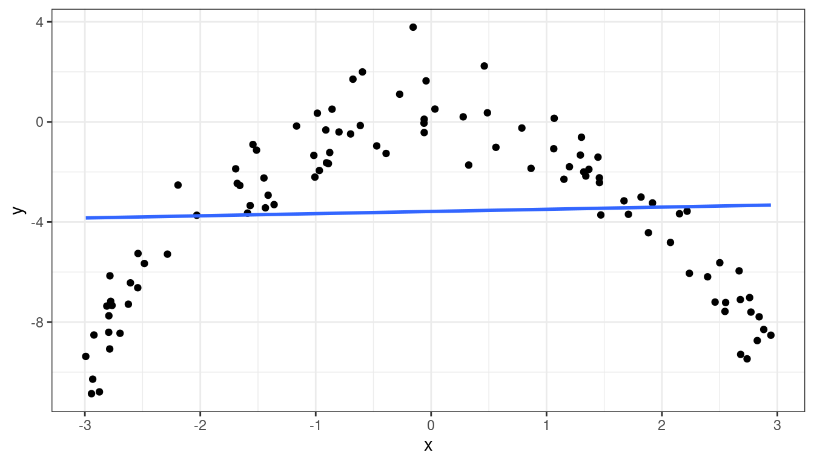
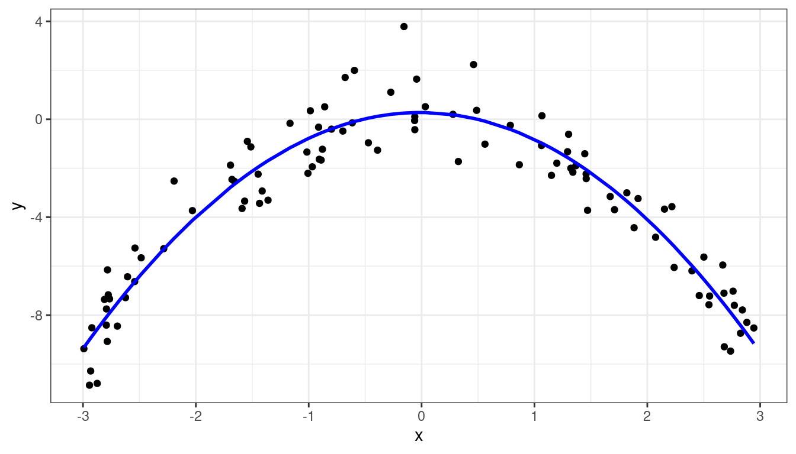
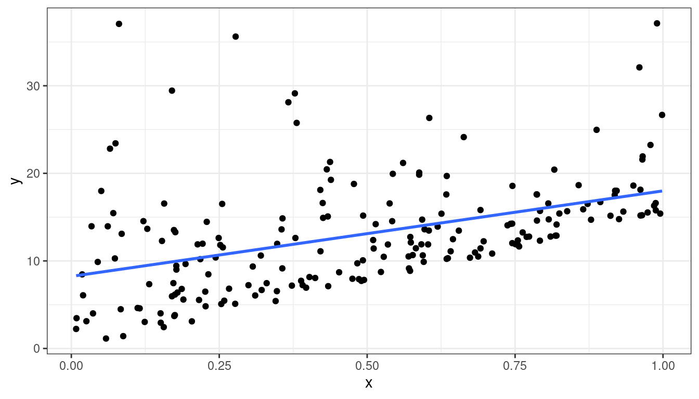
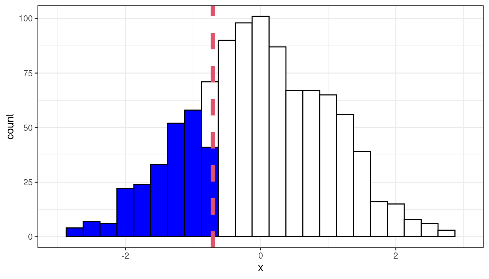

Diagnostics and Remedial Measures
David Gerard
2021-08-05
Learning Objectives
- Chapter 3 of KNNL (skip Sections 3.4–3.6 and the Box-Cox transformation).
- Interpreting residuals plots.
- Diagnosing violations in the assumptions of the simple linear model.
- Suggesting solutions to remedy the violations.
Recall: Assumptions in Decreasing Order of Importance
Linearity - Does the relationship look like a straight line?
Independence - knowledge of the value of one observation does not give you any information on the value of another.
Equal Variance - The spread is the same for every value of \(x\)
Normality - The distribution isn’t too skewed and there aren’t any too extreme points. (only an issue if you have outliers and a small number of observations, or if you are doing prediction intervals).
Problems when Violated
Linearity - Linear regression line does not pick up actual relationship
Independence - Linear regression line is unbiased, but standard errors are off.
Equal Variance - Linear regression line is unbiased, but standard errors are off.
Normality - Unstable results if outliers are present and sample size is small.
Assessment Tools: Scatterplots and Residual Plots
Make a scatterplot of the explanatory variable (\(x\)-axis) vs the response (\(y\)-axis) to check for non-linearity, equal variance, and normality violations.
Residuals (\(y\)-axis) vs fitted values (\(x\)-axis) is often more clear because the signal is removed.
You should get used to residual plots, because they are necessary when we start doing multiple linear regression
- \(x\) versus \(y\) does not work well as a diagnostic device when you have many \(x\)’s.
Dataset 1: Gold Standard
Dataset 1: Scatterplot
library(tidyverse)
library(broom)
x <- runif(100, -3, 3)
y <- x + rnorm(100)
df <- data.frame(x = x, y = y)qplot(x = x, y = y, data = df) + geom_smooth(method = "lm", se = FALSE)Dataset 1: Residual Plot
lmout <- lm(y ~ x, data = df)
aout <- augment(lmout)
qplot(x = .fitted, y = .resid, data = aout) + geom_hline(yintercept = 0)
Dataset 1: Summary
Means are straight lines
Residuals seem to be centered at 0 for all \(x\)
Variance looks equal for all \(x\)
Everything looks perfect
Exercise: Describe any issues with this plot.
Dataset 2: Curved Monotone Relationship, Equal Variances
Dataset 2: Scatterplot
x <- runif(100, 0, 6)
x <- x - min(x) + 0.5
y <- log(x) * 20 + rnorm(100, sd = 4)
df <- data.frame(x = x, y = y)qplot(x = x, y = y, data = df) + geom_smooth(method = "lm", se = FALSE)
Dataset 2: Residual Plot
lmout <- lm(y ~ x)
aout <- augment(lmout)
qplot(x = .fitted, y = .resid, data = aout) + geom_hline(yintercept = 0)
Dataset 2: Summary
Curved (but always increasing or always decreasing) relationship between \(x\) and \(y\).
Variance looks equal for all \(x\)
Residual plot has a parabolic shape.
These indicate a \(\log\) transformation of \(x\) could help.
Why not \(\log(y)\)? Because taking transforming \(y\) can change the variance, and we already have constant variance, so we do not want to mess with that.
- Recall, random variation occurs in the \(y\) direction, not the \(x\) direction.
Exercise: Consider the following data:
dftoy <- tribble(~x, ~y, 1, 1, 1, 2, 2, 1, 2, 5, 3, 1, 3, 20)Plot \(x\) versus \(y\). Then log-transform \(x\) and plot \(\log(x)\) versus \(y\). Then try log-transforming \(y\) and plotting \(x\) versus \(\log(y)\). Discuss how variation changes (vertically or horizontally) when we log \(x\) versus logging \(y\).
Dataset 2: Transformed \(x\) Scatterplot
df <- mutate(df, x_log = log(x))
qplot(x = x_log, y = y, data = df) + geom_smooth(method = "lm", se = FALSE)
Dataset 2: Transformed \(x\) Residual Plot
lmout <- lm(y ~ x_log, data = df)
aout <- augment(lmout)
qplot(x = .fitted, y = .resid, data = aout) + geom_hline(yintercept = 0)
Dataset 3: Curved Non-monotone Relationship, Equal Variances
Dataset 3: Scatterplot
x <- runif(100, -3, 3)
y <- -x^2 + rnorm(100)
df <- data.frame(x = x, y = y)qplot(x = x, y = y, data = df) + geom_smooth(method = "lm", se = FALSE)
Dataset 3: Residual Plot
lmout <- lm(y ~ x, data = df)
aout <- augment(lmout)
qplot(x = .fitted, y = .resid, data = aout) + geom_hline(yintercept = 0)Dataset 3: Summary
Curved relationship between \(x\) and \(y\)
Sometimes the relationship is increasing, sometimes it is decreasing.
Variance looks equal for all \(x\)
Residual plot has a parabolic form.
Dataset 3: Solution
Fit model:
\[ E[Y_i] = \beta_0 + \beta_1 X_i + \beta_2 X_i^2 \]
A more complicated solution (which we will not cover) would be to fit model \[ Y_i = \begin{cases} \beta_0 + \beta_1 X_i & \text{ if } X_i < C\\ \beta_0^* + \beta_1^* X_i & \text{ if } X_i > C\\ \end{cases} \]
Dataset 3: Fitting \(E[Y_i] = \beta_0 + \beta_1 X_i + \beta_2 X_i^2\)
df <- mutate(df, x2 = x^2) ## create x^2 first
quad_lm <- lm(y ~ x + x2, data = df) ## lm of x^2 + x
aout <- augment(quad_lm)
qplot(x = x, y = y, data = aout) +
geom_line(mapping = aes(x = x, y = .fitted), col = "blue", lwd = 1)
Dataset 3: Solution 1 Residuals
qplot(x = .fitted, y = .resid, data = aout) + geom_hline(yintercept = 0)Dataset 3: Peak estimation
ttemp <- tidy(quad_lm)
beta0 <- ttemp$estimate[[1]]
beta1 <- ttemp$estimate[[2]]
beta2 <- ttemp$estimate[[3]]Recall that \(y = \beta_0 + \beta_1x + \beta_2x^2\) is the equation of a parabola.
The estimated parabola is \(y = 0.2756 + -0.0248 x + -1.0802 x^2\)
We can get these coefficient estimates by running
tidy(quad_lm)## # A tibble: 3 × 5 ## term estimate std.error statistic p.value ## <chr> <dbl> <dbl> <dbl> <dbl> ## 1 (Intercept) 0.276 0.168 1.64 1.04e- 1 ## 2 x -0.0248 0.0572 -0.434 6.65e- 1 ## 3 x2 -1.08 0.0361 -30.0 8.09e-51The negative coefficient for \(x^2\) indicates that the parabola has a maximum, which we can recall occurs at \[ x = -\frac{\beta_1}{2\beta_2} = -\frac{-0.0248}{2 \times -1.0802} = -0.0115 \] So we could say that the trend increases to about 0, then decreases after 0.
Dataset 4: Curved Monotone Relationship, Variance Increases with \(Y\)
Dataset 4: Scatterplot
x <- runif(100, 0, 2)
y <- exp(x + rnorm(100, sd = 1/2))
df <- data.frame(x = x, y = y)qplot(x = x, y = y, data = df) + geom_smooth(method = "lm", se = FALSE)
Dataset 4: Residual Plot
lmout <- lm(y ~ x, data = df)
aout <- augment(lmout)
qplot(x = .fitted, y = .resid, data = aout) + geom_hline(yintercept = 0)Dataset 4: Summary
Curved relationship between \(x\) and \(y\)
Variance looks like it increases as \(y\) increases
Residual plot has a parabolic form.
Residual plot variance looks larger to the right and smaller to the left.
Dataset 4: Solution
Take a log-transformation of \(y\).
df <- mutate(df, y_log = log(y)) qplot(x = x, y = y_log, data = df) + geom_smooth(method = "lm", se = FALSE)
Dataset 4: Solution
lmout <- lm(y_log ~ x, data = df)
aout <- augment(lmout)
qplot(x = .fitted, y = .resid, data = aout) + geom_hline(yintercept = 0)
- Exercise: What if you see something like this? Do you think logging \(y\) will help?

Dataset 5: Linear Relationship, Equal Variances, Skewed Distribution
Dataset 5: Scatterplot
x <- runif(200)
y <- 15 * x + rexp(200, 0.2)
df <- data.frame(x = x, y = y)qplot(x, y, data = df) + geom_smooth(method = "lm", se = FALSE)
Dataset 5: Residual Plot
lmout <- lm(y ~ x, data = df)
aout <- augment(lmout)
qplot(x = .fitted, y = .resid, data = aout) + geom_hline(yintercept = 0)
Dataset 5: Summary
Straight line relationship between \(x\) and \(y\).
Variances about equal for all \(x\)
Skew for all \(x\)
Residual plots show skew.
Dataset 5: Solution
Do nothing, but report skew (usually OK to do)
Be fancy, fit quantile regression:
\[ Median(Y_i) = \beta_0 + \beta_1 X_i \]
- Be fancy, run a bootstrap (maybe we’ll talk about this later).
Dataset 6: Linear Relationship, Unequal Variances
Dataset 6: Scatterplot
x <- runif(100)
y <- x + rnorm(100, sd = (x + 0.3)^2 / 2)
df <- data.frame(x = x, y = y)qplot(x = x, y = y, data = df) + geom_smooth(method = "lm", se = FALSE)Dataset 6: Residual Plot
lmout <- lm(y ~ x, data = df)
aout <- augment(lmout)
qplot(x = .fitted, y = .resid, data = lmout) + geom_hline(yintercept = 0)Dataset 6: Summary
Linear relationship between \(x\) and \(y\).
Variance is different for different values of \(x\). This is called heteroscedasticity.
Residual plots really good at showing this.
Dataset 6: Solution
You can try logging both \(x\) and \(y\), sometimes that works. But that won’t work here. Be careful about negative values.
df <- mutate(df, y_log = log(y + 0.5), x_log = log(x))## Warning in log(y + 0.5): NaNs producedqplot(x = x_log, y = y_log, data = df)## Warning: Removed 2 rows containing missing values (geom_point).The book will suggest weighted least squares (with weights inverse to the variance).
But the modern solution is to use sandwich estimates of the standard errors.
library(lmtest) library(sandwich) cout <- coeftest(x = lmout, vcov. = vcovHC(x = lmout)) tidy(cout, conf.int = TRUE)## # A tibble: 2 × 7 ## term estimate std.error statistic p.value conf.low conf.high ## <chr> <dbl> <dbl> <dbl> <dbl> <dbl> <dbl> ## 1 (Intercept) 0.0124 0.0454 0.273 7.86e- 1 -0.0778 0.103 ## 2 x 1.03 0.150 6.85 6.55e-10 0.731 1.33vcovHC()stands for “Heteroscedastic-consistent variance/covariance”.Compare to old standard errors
tidy(lmout, conf.int = TRUE)## # A tibble: 2 × 7 ## term estimate std.error statistic p.value conf.low conf.high ## <chr> <dbl> <dbl> <dbl> <dbl> <dbl> <dbl> ## 1 (Intercept) 0.0124 0.0703 0.176 8.61e- 1 -0.127 0.152 ## 2 x 1.03 0.130 7.91 3.85e-12 0.772 1.29
Intuition of Sandwich Estimator of Variance
Simplified Model: \(Y_i = \beta_1 x_i\) (so zero intercept)
Using Calculus: \(\hat{\beta}_1 = \frac{\sum_{i = 1}^n x_i y_i}{\sum_{i = 1}^n x_i^2}\)
So \[\begin{align*} Var(\hat{\beta}_1) &= Var\left(\frac{\sum_{i = 1}^n x_i y_i}{\sum_{i = 1}^n x_i^2}\right)\\ &=\frac{\sum_{i = 1}^n x_i^2 Var(y_i|x_i)}{\left(\sum_{i = 1}^n x_i^2\right)^2} \end{align*}\]
Usual Method: Estimate \(Var(y_i|x_i) = \sigma^2\) with the MSE.
- Assumes variance estimate is same for all \(i\)
Sandwich Method: Estimate \(Var(y_i|x_i)\) with \((y_i - \hat{\beta}_1x_i)^2\)
- Allows variance estimate to differ at each \(i\)
Notes on Sandwich
They result in accurate standard errors of the coefficient estimates as long as
The linearity assumption is satisfied.
Independence is satisfied
You have a large enough sample size.
You cannot use them for prediction intervals
We will talk more about the sandwich estimator later.
Dataset 7: Outlying observations
x <- runif(100, -3, 3)
y <- x + rnorm(100)
x[[100]] <- 2.6
y[[100]] <- 10
df <- data.frame(x = x, y = y)qplot(x = x, y = y, data = df) + geom_smooth(method = "lm", se = FALSE)Dataset 7: Residual Plot
lmout <- lm(y ~ x, data = df)
aout <- augment(lmout)
qplot(x = .fitted, y = .resid, data = aout) + geom_hline(yintercept = 0)- So we see one observation very high in residual plot compared to the other points around that area.
Dataset 7: Solution
It’s generally a bad idea to discard outlying observations unless you know that this is a processing error or a calculation mistake.
Generally the procedure to dealing with outliers is:
- Detect influential points.
- Verify that the outliers are not caused by numerical errors.
- Fit the model both with and without the outliers. If the results do not change, report both results.
- If the results change, try fitting a robust approach.
Some robust approaches are described in Section 11.3 of KNNL. One possible approach is quantile regression, which assumes the model \[ Median(Y_i) = \beta_0 + \beta_1X_i \]
library(quantreg) rqout <- rq(y ~ x, data = df) t_rq <- tidy(rqout, conf.int = TRUE) t_rq## # A tibble: 2 × 5 ## term estimate conf.low conf.high tau ## <chr> <dbl> <dbl> <dbl> <dbl> ## 1 (Intercept) -0.290 -0.525 -0.0317 0.5 ## 2 x 1.02 0.878 1.17 0.5We have a large sample size, so the results do not change much.
tidy(lmout, conf.int = TRUE)## # A tibble: 2 × 7 ## term estimate std.error statistic p.value conf.low conf.high ## <chr> <dbl> <dbl> <dbl> <dbl> <dbl> <dbl> ## 1 (Intercept) -0.136 0.115 -1.18 2.39e- 1 -0.365 0.0922 ## 2 x 1.08 0.0657 16.4 8.48e-30 0.945 1.21Chapter 10 contains more details on evaluating the influence of outliers.
Exercise: Consider the following data:
dftoy <- tribble(~x, ~y, 2, 16, 4, 23, 5, 27, 6, 29, 7, 32, 8, 35, 9, 37, 12, 54)Make a scatterplot of
yonx, then make a residual versus fits plot for a regression ofyonx. Does the residual plot suggest that outliers are the issue, or is it decieving you into thinking something else is the issue?
Dataset 8: Sequence plots of residuals to check independence
Sometimes, the residuals can exhibit autocorrelation where residuals close to each other in time (or a sequence) are more similar than those further away.
x <- sort(runif(100, -3, 3)) epsilon <- rep(NA_real_, length.out = length(x)) epsilon[[1]] <- 0 rho <- 0.9 for (i in 2:length(epsilon)) { epsilon[[i]] <- 0.85 * epsilon[[i-1]] + rnorm(1) } y <- x + epsilon df <- data.frame(x = x, y = y)qplot(x = x, y = y, data = df) + geom_smooth(method = "lm", se = FALSE)
lmout <- lm(y ~ x, data = df) aout <- augment(lmout) aout <- mutate(aout, index = row_number()) qplot(x = index, y = .resid, data = aout) + geom_hline(yintercept = 0)This is a specific issue with the independence assumption.
The OLS fit is still unbiased, but the standard errors will be too small (because we have less information than we think).
Dataset 8: Solution
This is discussed in detail in Chapter 12 of KNNL.
You should first check if including omitted variables helps remove autocorrelation.
- E.g. plotting annual sales versus average price over time, if you are missing population size, then adjacent years probably have more similar errors.
You can try to estimate autocorrelation directly (Section 12.4 of KNNL).
You can also adjust the OLS standard errors using a similar approach to sandwich estimation. This is called the “Newey-West HAC” (Heteroskedasticity- and autocorrelation-consistent) estimate of the standard error.
library(lmtest) library(sandwich) cout <- coeftest(x = lmout, vcov. = vcovHAC(x = lmout)) tidy(cout, conf.int = TRUE)## # A tibble: 2 × 7 ## term estimate std.error statistic p.value conf.low conf.high ## <chr> <dbl> <dbl> <dbl> <dbl> <dbl> <dbl> ## 1 (Intercept) 0.236 0.332 0.709 0.480 -0.424 0.895 ## 2 x 0.991 0.188 5.27 0.000000825 0.617 1.36- Notice we used
vcovHAC()instead ofvcovHC().
- Notice we used
Compare to original standard errors
tidy(lmout, conf.int = TRUE)## # A tibble: 2 × 7 ## term estimate std.error statistic p.value conf.low conf.high ## <chr> <dbl> <dbl> <dbl> <dbl> <dbl> <dbl> ## 1 (Intercept) 0.236 0.156 1.51 1.33e- 1 -0.0731 0.544 ## 2 x 0.991 0.0900 11.0 8.18e-19 0.812 1.17You should have large sample sizes for accurate inference (\(n\geq 100\)) for estimating the autocorrelation or adjusting the standard errors.
Quantile-Quantile plots of residuals to check normality
To check the normality of the residuals, plot the sample quantiles of the residuals against the theoretical quantiles of the normal distribution.
Quantile: The \(q\)th quantile of a variable is the value at with \(q\) proportion of the observations fall.
Sample 0.25-quantile

Theoretical 0.25-quantile

If the residuals were approximately normal, then we would expect the 0.25 quantile of the data to be about the 0.25 quantile of the normal, the 0.7 quantile of the data to be about the 0.7 quantile of the normal, etc.
We can graphically compare the quantiles by making a scatterplot of the sample quantiles to the theoretical quantiles. This is called a QQ-plot (for quantile-quantile).
We usually place the theoretical quantiles on the \(x\)-axis and the sample quantiles on the \(y\)-axis.
Constructing a QQ-plot
Exercise: The simplest definition of the \(p\)th sample quantile is the minimum value \(q\) in the sample such that at least \(p\) proportion of the observations are at or below \(q\). In mathematical notation \[ Q(p) = \min\left(q \in \{X_1,X_2,\ldots,X_n\}: p\leq \frac{1}{n}\#\{X_i:X_i < q\}\right) \] In R, this corresponds to the
type = 1argument from the quantile function. Try running this code and try understanding this definition:quantile(x = c(4, 9, 13, 22, 37), probs = c(0.19999, 0.2, 0.20001, 0.39999, 0.4, 0.40001), type = 1)Which quantiles do you think we would use when constructing a QQ-plot?
QQ-plots Can show us deviations from normality
QQ-plot indicating right skew.

QQ-plot indicating left skew.
QQ-plot indicating heavy tails.
QQ-plot indicating light tails.
QQ-plots in R
We can evaluate the normality assumption from the bread and peace example.
hibbs <- read_csv("https://dcgerard.github.io/stat_415_615/data/hibbs.csv") lmhibbs <- lm(vote ~ growth, data = hibbs)Use
augment()from the{broom}package to obtain the residuals. Then use thegeom = "qq"argument in theqplot()function. Make sure you specifysample = .resid, notx = .resid.aout <- augment(lmhibbs) qplot(sample = .resid, data = aout, geom = "qq") + geom_qq_line()
There is a small deviation, but it’s not too bad.
Final notes about normality
Only worry about normality if you see extreme outliers or other extreme deviations from normality (or if you want prediction intervals).
Check for normality last. Violations of linearity could make it seem like normality is violated.
Residual plots against omitted predictors
If you have predictors that you did not use in the model, it is always a good idea to make plots of the residuals against those omitted predictors.
Consider the Palmer Penguins Data.
library(palmerpenguins) data("penguins") glimpse(penguins)## Rows: 344 ## Columns: 8 ## $ species <fct> Adelie, Adelie, Adelie, Adelie, Adelie, Adelie, Adel… ## $ island <fct> Torgersen, Torgersen, Torgersen, Torgersen, Torgerse… ## $ bill_length_mm <dbl> 39.1, 39.5, 40.3, NA, 36.7, 39.3, 38.9, 39.2, 34.1, … ## $ bill_depth_mm <dbl> 18.7, 17.4, 18.0, NA, 19.3, 20.6, 17.8, 19.6, 18.1, … ## $ flipper_length_mm <int> 181, 186, 195, NA, 193, 190, 181, 195, 193, 190, 186… ## $ body_mass_g <int> 3750, 3800, 3250, NA, 3450, 3650, 3625, 4675, 3475, … ## $ sex <fct> male, female, female, NA, female, male, female, male… ## $ year <int> 2007, 2007, 2007, 2007, 2007, 2007, 2007, 2007, 2007…lmpen <- lm(body_mass_g ~ bill_length_mm, data = penguins) aout <- augment(lmpen) penguins %>% mutate(.rownames = as.character(row_number())) %>% left_join(aout) %>% qplot(x = species, y = .resid, data = ., geom = "boxplot")Whenever you see a systematic pattern between the residuals and an omitted predictor (as above), this indicates that you should include that predictor in your model.
\(F\)-test for lack of fit
In many cases, you have repeat observations at the same value of the predictors. If you design a study, it is a good idea to include repeats at the same predictor levels.
If so, then it is possible to run a lack-of-fit test:
- \(H_0: E[Y_i] = \beta_0 + \beta_1 X_i\)
- \(H_A: E[Y_i] \neq \beta_0 + \beta_1 X_i\)
Rejecting this test indicates that the linear model is not a good fit.
Failing to reject this test tells us that at least we do not have evidence that the linear model is a bad fit.
We will consider this example in the context of a experiment run on 11 branches of a bank. Each branch offered a set gift size (\(X\)) to open a new account. The branches then measured the number of new accounts opened (\(Y\)).
bank <- tibble::tribble(~gift, ~accounts, 125, 160, 100, 112, 200, 124, 75, 28, 150, 152, 175, 156, 75, 42, 175, 124, 125, 150, 200, 104, 100, 136 )There are 6 values of gift size, with all but one value having two units.
The basic idea of the lack-of-fit test is to compare the residuals under the regression model (the reduced model) to the residuals under a “saturated” model where each level of \(X\) is allowed to have its own mean.
Reduced Model: SSE(R)

Full Model: SSE(F)
There are 11 observations.
In the reduced model, there are two parameter (\(y\)-intercept and slope), so \(df_R = 11 - 2 = 9\).
In the full model, there are six parameters (one for each mean to estimate), so \(df_F = 11 - 6 = 5\).
Use the \(F\)-statistic \[ F^* = \frac{[SSE(R) - SSE(F)] / (df_R - df_F)}{SSE(F) / df_F} \]
Under the reduced model, we have \[ F^* \sim F(df_R - df_F, df_F) \]
So we can compare it to this distribution to obtain a \(p\)-value.
Lack-of-fit Test in R
First, fit both the reduced and full models.
The reduced model we’ve seen before.
lm_r <- lm(accounts ~ gift, data = bank)The full model is fit automatically if you convert
giftto a factor variable. We’ll talk about the specifics of how this works when we get to indicator variables in multiple linear regression.df_full <- mutate(bank, gift_factor = as.factor(gift)) lm_f <- lm(accounts ~ gift_factor, data = df_full)Then use the
anova()function to compare these two models.anova(lm_r, lm_f)## Analysis of Variance Table ## ## Model 1: accounts ~ gift ## Model 2: accounts ~ gift_factor ## Res.Df RSS Df Sum of Sq F Pr(>F) ## 1 9 14742 ## 2 5 1148 4 13594 14.8 0.0056We can verify this \(p\)-value by calculating the \(F\)-statistic manually.
resid_r <- augment(lm_r)$.resid resid_f <- augment(lm_f)$.resid sse_r <- sum(resid_r^2) sse_f <- sum(resid_f^2) df_r <- nrow(bank) - 2 df_f <- nrow(bank) - 6 f_star <- ((sse_r - sse_f) / (df_r - df_f)) / (sse_f / df_f) pf(q = f_star, df1 = df_r - df_f, df2 = df_f, lower.tail = FALSE)## [1] 0.005594
Math notation
We will change notation. Let \(Y_{ij}\) be the \(j\)th individual in group \(i\). Let \(X_i\) be the level of group \(i\).
You might recognize the above “saturated” model as a one-way ANOVA model \[ Y_{ij} \sim N(\mu_i, \sigma^2) \]
We compare the ANOVA model to the “reduced” linear regression model. \[ Y_{ij} \sim N(\beta_0 + \beta_1X_i, \sigma^2) \] where \(X_i\) is the level of group \(i\).
This makes it more clear that the regression model is a reduced version of the ANOVA model.
Lack-of-fit test Summary
- Lack-of-fit \(F\)-test tests the assumption of linearity.
- Needs multiple observations at different predictor values (but some values can have only one observation).
- Small \(p\)-values indicate lack-of-fit (so linearity is not a valid assumption).
Other transformations
The book suggests other transformations (square root, Box-Cox).
Square root on the response will compress values more mildly than the log.
The Box-Cox transformation on the response is really a set of transformations that includes the log and the square root as special cases.
\(1/X\) and \(exp(X)\) and \(exp(-X)\) and \(\sqrt{X}\) could all help improve linearity.
If your goal is prediction, then have at it.
But if your goal is inference, then you lose all interpretability by using transformations other than \(\log()\). So think carefully before trying other transformations.
Back Transforming
- After you make a transformation, you often want to back transform predictions, estimates, etc.
Smoothers
Use non-parametric approaches to curve fitting for exploration purposes. When you have a ton of values, or if the trend is weak relative to the variance, it is sometimes easier to see a trend if you plot an estimate of the curve.
Lowess works by estimating the mean \(Y\) value at a given point \(X\) by fitting a regression to points near \(X\), weighting the objective function proportionally to how far away values are from \(X\). E.g. \[ \sum_{i: X_i \text{ is near } X} w_i[Y_i - (\beta_0 + \beta_1 X_i)]^2, \] where \(w_i\) is larger for values closer to \(X\). For each \(X\) where you want to make a prediction, it obtains an estimate \(\hat{\beta}_0\) and \(\hat{\beta}_1\) and estimates the mean value by \(\hat{\beta}_0 + \hat{\beta}_1 X\).
- This is not exactly what happens, but gives you an idea of how it works.
In practice, you don’t need to know any of this. Just add
geom_smooth(se = FALSE)after you make a scatterplot.qplot(x = growth, y = vote, data = hibbs) + geom_smooth(se = FALSE)Be careful not to over-interpret these. E.g., don’t say that the above is evidence for a leveling off between 1 and 2, then increasing again. Lowess does not provide inference. It can only generate questions.